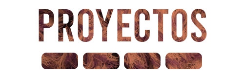
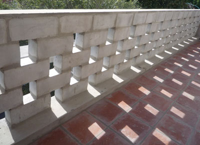

Proponemos un sistema constructivo en cada proyecto.
El siguiente cuadro es solo una muestra de los productos a un público general de nivel educativo medio,
consciente de las ventajas medioambientales del reciclaje y, tal vez, de las ventajas económicas de una buena aislación térmica.
PRODUCTOS
USOS
RESIDUOS
Ladrillón compacto
- Muros de cerramiento
- Muros portantes
- Parapetos
Cascotes de mamposteria y poliestireno expandido, otros plásticos
Sistema USSU
- Bloques y placas para mejora exterior de muros existentes
Cascotes de mamposteria y poliestireno expandido
Papel cemento
- Placas de revestimiento
- Placas ciegas y caladas para cielorraso
Papeles de bolsas de construcción y fibras